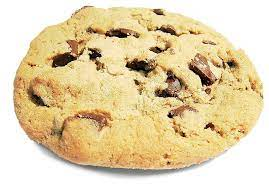

Mom's Cookies

Ingrients
- 1.5 cups brown sugar
- 3 eggs
- 2 cups AP flour
- 1 teaspoon baking powder
- 1/2 teaspoon baking soda
- 1/2 teaspoon salt
- 1 teaspoon ground cinnamon
- 1/2 teaspoon ground nutmeg
- 1/4 teaspoon ground cloves
- 1/2 cup raisins
- 1/2 cup chopped walnuts
- 1 cup dates, pitted and chopped
Directions
- Preheat oven to 375 degrees F (190 degrees C).
- Cream together the shortening and the butter. Add the brown sugar and cream until light and fluffy. Beat in the eggs until well blended.
- Sift the flour, baking powder, baking soda, salt, cinnamon, nutmeg, and cloves over the creamed mixture. Mix in then stir in the raisins, nuts and dates.
- Drop cookies onto ungreased baking sheets and bake at 375 degrees F (190 degrees C) for 8 to 10 minutes or until golden.